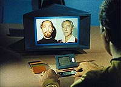
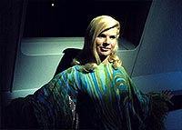
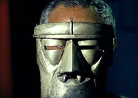
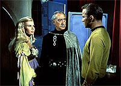
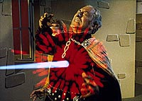

|
MANCHETE
DO EPISÓDIO
Sucesso
emerge de profunda inspiração
com tragédias de William Shakespeare
Episódio
anterior | Próximo episódio Sinopse:
Data Estelar:
2817.6. Kirk desvia
a Enterprise de seu curso a pedido de um amigo, o dr. Thomas Leighton, para investigar
uma suposta descoberta de uma comida sintética pelo cientista. Porém, enquanto
os dois assistem a uma peça de teatro, Leighton revela que a descoberta era uma
mentira inventada por ele para atrair Kirk, pois suspeita de que um dos atores
da companhia, Anton Karidian, seja na verdade Kodos, ex-governador militar da
colônia de Tarsus IV 20 antes e na época responsável pela execução de 4.000 pessoas.
Ele espera que Kirk, que foi testemunha de tal massacre, assim como o próprio
Leighton, possa ajudá-lo a descobrir a verdade.
Leighton insiste para
que Kirk o ajude, mas o capitão permanece incrédulo quanto à possibilidade de
Kodos estar vivo. Kirk volta a sua nave após Leighton lhe dizer ter convidado
a companhia de teatro Karidian para um coquetel em sua casa à noite. Curioso acerca
das suspeitas sob Karidian, Kirk começa uma pequena investigação usando as informações
arquivadas no banco de dados. Ele descobre não existir registro de nenhuma atividade
de Karidian antes da morte de Kodos. Além disso, a comparação entre as fotos dos
dois, levando em consideração o lapso de vinte anos entre tais registros, mostra
alguma semelhança entre eles.
 Kirk
volta ao planeta e durante o coquetel na casa de Leighton encontra a filha de
Karidian, Lenore, que informa que seu pai não irá comparecer ao evento. Ele passa
então a investir em Lenore e entre um flerte e outro vai descobrindo o que pode,
e a convida para um passeio. Durante este passeio, Kirk descobre o corpo sem vida
de Leighton, que havia deixado a residência um pouco antes de Kirk chegar ao coquetel.
Cada vez mais desconfiado, ele promete à viúva de Leighton, Martha, descobrir
por que seu marido foi morto. Kirk entra em contato com o capitão da Astral Queen,
nave que deveria transportar a companhia para seu próximo destino, e pede que
cancele sua parada no planeta. Ele volta à Enterprise e aguarda até Lenore vir
a bordo e pedir transporte a bordo de sua nave. Após tripudiar um pouco ele concorda,
tendo em troca a oferta de uma apresentação do grupo enquanto a companhia estiver
a bordo. Nesse meio tempo repreende Spock, quando o oficial de ciências o interpela
sobre a mudança de curso.
Kirk descobre que outro sobrevivente do massacre
é também um tripulante da Enterprise, o tenente Kevin Riley, que teve toda a sua
família morta por Kodos, e que recentemente havia sido transferido da engenharia
para um posto em comunicações. Kirk ordena a Spock que transfira Riley de volta
para a engenharia. O Vulcano pede uma explicação para a ordem, mas é mais uma
vez ignorado.
Spock estranha as atitudes de Kirk e resolve discutir o
assunto com McCoy, que, entretanto não vê nada demais nas atitudes do capitão
e credita a presença da companhia Karidian a bordo a um suposto interesse de Kirk
em Lenore. Spock permanece incrédulo. Kirk continua investindo em Lenore a fim
de tentar descobrir mais informações, mas vai aos poucos se envolvendo com a moça,
enquanto ela se esquiva como pode das indagações do capitão da Enterprise.
Spock começa sua própria investigação relacionando os fatos sobre Kirk, Karidian,
Riley e Leighton e descobre o mesmo que Kirk já sabia. Ele leva a McCoy suas descobertas,
informando as circunstâncias que conduziram Kodos a ordenar a morte dos colonos
vinte anos atrás. Conta como uma contaminação de toda a comida da colônia fez
com que Kodos, acreditando que a ajuda não chegaria a tempo, selecionasse sob
seus próprios critérios quem seria morto para que outros pudessem viver.
 Ele
prossegue revelando que o corpo de Kodos na verdade nunca fora identificado, e
ainda que a história de Karidian se iniciava imediatamente após a morte do ex-governador.
Revela ainda que das nove pessoas que podiam identificá-lo sete já haviam sido
mortas, e que todas as mortes aconteceram quando a companhia teatral Karidian
estava presente. Após esse relato, Spock finalmente consegue a atenção de McCoy.
De volta à engenharia, Kevin Riley pede pelo intercom que Uhura, que estava
na sala de recreação, cante para ele. Riley não percebe a presença de alguém na
engenharia que mistura ao seu leite algum tipo de veneno, bebe o conteúdo do copo
e começa a passar mal. Já com o tenente na enfermaria, Spock lembra a McCoy a
importância de mantê-lo vivo --caso contrário, restaria apenas Jim Kirk com a
capacidade de identificar Kodos.
Apesar de ter descoberto o que envenenou
Riley, uma espécie de lubrificante encontrado na própria nave, McCoy ainda resiste
à idéia de tentativa de homicídio. Já Spock não tem dúvidas de que o que aconteceu
não foi acidente. Ambos vão ao alojamento de Kirk e apresentam a ele um relatório.
McCoy reluta em afirmar que houve uma tentativa de assassinato de Riley, porém
Spock mais uma vez discorda e teme que o mesmo possa acontecer com Kirk, acrescentando
que está a par de suas suspeitas sobre Karidian.
Kirk o repreende por
interferir em seus assuntos pessoais. Spock retruca, pois julga que esses assuntos
estão interferindo na operação da nave. McCoy intervém em favor do Vulcano, lembrando
ao capitão que Spock está cumprindo sua obrigação com imediato e a discussão é
interrompida. Eles passam a discutir sobre a possibilidade de Kodos ser realmente
Karidian. Spock não tem dúvidas, mas Kirk ainda reluta.
Convicto
que de fato ocorreu uma tentativa de assassinato a Riley e certo que o mesmo acontecerá
ao capitão, Spock questiona Kirk sobre o porquê de se expor a essa possibilidade,
mas Kirk argumenta que está interessado em justiça. McCoy o indaga se na verdade
Kirk não procura por vingança e ele responde não ter certeza.
Sem
McCoy, o debate entre Kirk e Spock continua nos alojamentos, quando Spock ouve
o som de um feiser em sobrecarga. Kirk encontra a arma e lança para fora da nave
poucos segundos antes da explosão. Perturbado pelo atentado, Kirk desiste da tática
de aproximação lenta e vai ao alojamento de Karidian, indagando-o sobre seu passado.
Ele devolve apenas evasivas, então Kirk exige que Karidian faça um teste de comparação
de voz. A discussão entre os dois prossegue até que Lenore aparece e interrompe.
Na enfermaria, McCoy está fazendo seu registro e cita a possibilidade de
que Karidian seja Kodos. Riley, ainda na enfermaria, mas recuperado, está ouvindo.
A apresentação programada da companhia Karidian prossegue. Kirk e Spock analisam
o resultado do teste de voz e uma vez mais Spock acredita que o teste seja positivo,
enquanto Kirk ainda se nega a aceitar as provas que tem em mãos.
McCoy avisa que Riley sumiu da enfermaria. Quase ao mesmo tempo Kirk é informado
pela segurança de que o depósito de armas fora arrombado e um feiser roubado.
Um alerta contra Riley é expedido enquanto o capitão e Spock se dirigem ao local
da apresentação. Kirk encontra Riley nos bastidores do teatro empunhando o feiser
roubado e consegue demover o tenente de sua intenção inicial. Riley entrega arma
a Kirk e volta à enfermaria.
 Sem
saber o que acontecia, Karidian está a ponto de confessar a Lenore sobre seu passado
sem saber que sua filha já o conhecia. Lenore confidencia ter matado as outras
pessoas que poderiam identificá-lo como Kodos, e que planejava matar os dois últimos
(Kirk e Riley) ainda naquela noite, logo após a peça. Karidian fica transtornado
e Lenore está fora de si.
Kirk ouve a confissão de Lenore e se
aproxima pedindo que ambos o acompanhem. Um derrotado Karidian assume ser Kodos.
Lenore, afetada pela loucura, insiste que ela e seu pai devem retornar ao palco,
mas Kirk chama um segurança para que escolte os dois. Lenore toma o feiser do
guarda e corre em direção ao palco. Em frente a uma platéia assustada, ela aponta
para Kirk e atira, mas Karidian se coloca à frente do disparo e é morto pelas
mãos da própria filha, que enlouquecida chora sobre o corpo caído do pai.
A Enterprise deixa a órbita de Benecia, após deixar Lenore entregue a uma
equipe médica, sob tratamento. Segundo McCoy, a moça não lembrava mais do que
havia acontecido, nem da morte do pai ou mesmo das mortes que causou. Jim Kirk
está desolado, e quando McCoy pergunta a ele o quanto ele realmente se importava
com Lenore, não obtém nenhuma resposta. O capitão apenas ordena velocidade à frente.
Comentários:
Seguramente este é um dos melhores episódios de toda a
Série Clássica de Jornada nas Estrelas. Ele inaugura oficialmente
a longa relação de Jornada com William Shakespeare, o que permearia tanto
a série de Kirk e cia. quanto A Nova Geração por vários anos. Mas o segmento
vai além da citação pura e simples de alguns trechos das obras do escritor inglês,
transportando elementos de Hamlet e MacBeth para o espaço e para os decks da Enterprise
com sucesso, levando-se em conta, é claro, a complexidade de realizar tal feito,
especialmente em uma série de TV e em parcos 51 minutos de ação.
Refrescando
a memória com respeito à inspiração do "velho bardo", lembremos o seguinte:
* O príncipe Hamlet, assombrado pelo fantasma do pai, pai que fora morto
pelo próprio irmão que ambicionava tomar-lhe o trono e esposa, é corroído pelo
sentimento de vingança contra o tio.
* Motivado por uma visão dada
por bruxas, e incentivado por sua ambiciosa esposa, Lady MacBeth, o Barão de MacBeth
mata o Rei da Escócia com a intenção de tornar-se o próximo Rei.
Tal
qual o fantasma do pai fez com Hamlet, o dr. Leighton, Kirk e o próprio Karidian
passam a ser assombrados pelo fantasma do ditador Kodos, e, tal qual nas obras
de Shakespeare, a partir daí uma trama se desenrola que ajuda a formar um panorama
que nos dá um retrato de vários pontos de questionamento da alma humana, tais
como relacionamentos (tanto familiares como amorosos), manipulação do poder, loucura,
dissimulação, juventude e velhice, ação e omissão, a corrupção do poder (e pelo
poder) etc.
Kirk, chamado pelos fantasmas do seu passado, começa sua
investigação e da mesma forma que Hamlet, mente, manipula, dissimula e usa de
todo o poder que tem para conseguir sua justiça, ou mesmo sua vingança. Ele mesmo
assume não ter certeza de suas reais motivações, mas, ainda parafraseando Hamlet,
ele hesita, vacila em dar seu último e derradeiro passo mesmo diante das provas,
provas que dão muito antes a Spock a certeza de que Karidian é Kodos, mas não
para o atormentado Kirk.
 Eis
que a trama insere a personagem Lenore, que Kirk corretamente chama de Lady MacBeth,
pois, assim como a Lady Macbeth da peça de Shakespeare, é Lenore que com indecifrável
dissimulação e usando de seus encantos planeja e executa o plano de eliminar as
pessoas que podiam dizer que seu pai era Kodos.
O próprio Karidian se
revela um personagem profundo. Para Kirk, Riley, Leighton e para a própria História,
Kodos era um carrasco, um assassino cruel que sem remorso ordenou a execução de
4.000 pessoas a sangue frio. Mas o próprio Karidian nos apresenta uma visão diferente
enquanto discute com Kirk. Ele vê a si mesmo como uma pessoa que teve que decidir
entre vida e morte, e tomou tal decisão, e por ela Kodos/Karidian se vê como um
herói, não como um assassino, e isso torna sua angústia maior ainda.
Karidian tem também a audácia de julgar Kirk, nosso herói, herói investido da
autoridade do bem absoluto em busca de justiça, mas que para isso não hesita em
usar qualquer subterfúgio que esteja à sua mão, sem pensar nas implicações morais
de tais atos. Isso salta ainda mais aos olhos quando Kirk ordena que Riley seja
mandado de volta à engenharia numa tentativa clara de atrair um possível assassino,
mesmo que para isso a segurança de Riley fosse comprometida. Esse é outro tema
de Hamlet, um drama que confronta o homem com suas imperfeições e não aceita idealismos
aparentes.
Enfim o plano se revela e a máscara da loucura de Lenore cai
sob os olhos de Karidian e Kirk, como uma espada. Esta espada ceifa a vida de
Karidian/Kodos, que morre em desgraça absoluta sabendo que sua filha, que tanto
havia feito para proteger de sua sombria herança, havia manchado as mãos de sangue
em seu nome sem ele saber. Lenore, que havia feito de tudo para que seu pai nunca
mais tivesse que confrontar seus fantasmas, perde tudo e se entrega à demência
ao ver o corpo de seu pai, morto, virando ela mesma uma espécie de fantasma. E
Kirk, nosso herói, consegue seu intento, mas claramente sabe ter usado das mesmas
armas que Lenore. Será ele melhor que essa Lady MacBeth? Kirk perde a possibilidade
do amor de Lenore, preço que teve pagar para realizar suas intenções. O episódio
começou com uma mentira e terminou com uma omissão, e, assim como nas obras de
Shakespeare, sem vencedores.
Mas nem só de Shakespeare vive "The
Conscience of the King". Temos aqui um interessante e divertido dueto
entre McCoy e Spock, uma das fórmulas de sucesso sempre garantido durante a existência
da Série Clássica, mesmo quando no cinema. McCoy primeiro desdenha de
Spock, depois se mostra reticente quanto às suspeitas do Vulcano, mas quando Kirk
investe contra Spock é McCoy quem o defende, emprestando a ele seu apoio, sem
dúvidas da total lealdade de Spock à sua nave e a seu capitão. Um tipo de seqüência
diversas vezes retomada, mas sempre bem-vinda.
Um pouco do bom
humor de melhor qualidade produzido nessa série também pode ser visto quando Kirk
"adivinha" que Lenore virá a bordo da nave, deixando Spock curioso com as "habilidades"
de seu capitão. Some-se também uma excelente atuação tanto dos atores regulares
--incluindo aí o tantas vezes criticado William Shatner-- quanto do elenco convidado
(notadamente Arnold Moss) e temos um marcante episódio.
 Mas
o segmento também tem seus problemas. Talvez o principal deles seja a questionável
autoridade de Kirk, que como capitão da Frota Estelar não teria jurisdição (em
teoria) para agir da forma como agiu sem nenhuma autorização da Frota Estelar.
É claro que essa era uma premissa absolutamente indispensável ao roteiro proposto,
mas sempre questionável do ponto de vista de Jornada. Outro grave problema
é que o episódio não dá nenhuma pista (ao menos para a audiência) sobre o papel
de Lenore em toda a história, muito menos como ela conseguiu meios para realizar
todos os sete crimes e acobertá-los com apenas 19 anos de idade. É curiosa também
a fixação do episódio na idéia da suprema importância (para a identificação positiva
do "Carrasco") das tais "nove testemunhas oculares", ao mesmo tempo em que vemos
fotos e registros vocais de Kodos ao alcance de uma consulta ao computador da
Enterprise.
Alguns outros detalhes pontuais também vão contra o
episódio. Por exemplo, Lenore é transportada a bordo da Enterprise aparentemente
sem autorização de ninguém a bordo. Somente quanto ela está a bordo é que o capitão
e o primeiro-oficial foram informados de sua presença. Como foi que Lenore conseguiu
o feiser que ela colocou em sobrecarga nos aposentos do capitão se mesmo Riley,
um tripulante da nave, teve que arrombar o arsenal para conseguir um, o que imediatamente
foi informado pela segurança? Como foi que ela colocou o feiser no alojamento
de Kirk se aparentemente Kirk e Spock não deixaram o local após a saída de McCoy?
Por que o feiser que Lenore tomou do segurança e com o qual matou seu pai não
estava regulado para tonteio? Além disso, o horrível adereço usado pelo dr. Leighton
simulando uma espécie de prótese era totalmente dispensável (dando a impressão
de que Kodos era uma espécie de torturador sádico, o que não bate com a versão
contada por Spock, mostrando uma desnecessária "falta de honestidade melodramática"
do roteiro nesse ponto).
De qualquer forma, mesmo considerando as suas
deficiências, "The Conscience of the King" permanece como um dos segmentos
mais bem realizados de toda a série.
Citações:
Karidian - "What hands are here? Ha! They plunck out
mine eyes! Will all great Neptune's ocean wash this blood clean from my hand?
No. This my hand will rather The multitudinous seas incarnadine, making the green
one red." (MacBeth, Ato 2, Cena 2)
("Que mãos estão aqui? Há! Elas esbugalham
meus olhos! Todo o oceano do grande Netuno lavará esse sangue das minhas mãos?
Não. Essa minha mão vai provavelmente deixar em carne os mares multitudinosos,
fazendo do verde vermelho.")
Kirk - "Worlds are conquered, galaxies
destroyed, but a woman is always a woman."
("Mundos são conquistados,
galáxias destruídas, mas uma mulher é sempre uma mulher.")
Lenore
- "And this ship... all this power, surging and throbbing, yet under control.
Are you like that, captain?"
("E esta nave... todo esse poder, emergindo
e pulsando, mas ainda sob controle. Você é assim, capitão?")
Spock
- "My father's race was spared the dubious benefits of alcohol."
("A raça
de meu pai foi poupada dos dúbios benefícios do álcool.")
McCoy - "Oh.
Now I know why they were conquered."
("Oh. Agora sei por que eles
foram conquistados.")
Trivia:  Em cenas cortadas da versão final do episódio, o paralelo entre Karidian e o fantasma
do pai de Hamlet é ainda mais reforçado.
Em cenas cortadas da versão final do episódio, o paralelo entre Karidian e o fantasma
do pai de Hamlet é ainda mais reforçado.
O falecido Arnold Moss foi um ator de ótima formação dramática, tendo se aposentado
da profissão em 1976 e morrido 13 anos depois de câncer no pulmão. Seu filme de
cinema mais popular é "Viva Zapata!" (1952), do diretor Elia Kazan e contando
com nomes como Marlon Brando e Anthony Quinn no elenco.
O episódio marcou a segunda e última participação do personagem do tenente Kevin
Thomas Riley na série. Em um rascunho inicial do roteiro o personagem a ser utilizado
se chamaria tenente Robert Daiken, quando alguém na produção se lembrou que o
ator escalado Bruce Hyde já havia aparecido anteriormente na série (em "The Naked
Time") a troca foi feita.
Esse episódio marca a despedida de Grace Lee Whitney (como a ordenança Rand) da
série. Isto se deu devido a pressão da rede de televisão NBC para que Kirk tivesse
disponibilidade para ter uma sucessão de interesses românticos semana após semana.
Ela posteriormente seria vista na franquia em "Jornada nas Estrelas: O Filme".
A música do compositor Joseph Mulendore contribuiu muito para o clima sombrio
do episódio. Apesar de não retornar para compor novamente para a série, os temas
do compositor para este segmento seriam aproveitados em outros episódios posteriormente.
A necessidade de reduzir os custos da produção fica evidente ao olharmos pela
janela da casa do dr. Leighton, o cenário exterior vem da estação de mineração
de "Where No Man Has Gone Before" e o
pano de fundo pintado foi, inicialmente, usado na conhecida "cena do piquenique
entre Pike e Vina" de "The Cage".
O convés de observação não seria visto novamente na série, mas o hangar das naves
auxiliares (não mostrado aqui) faria várias aparições a partir do episódio seguinte,
"The Galileo Seven".
Leonard Nimoy viu um paralelo entre essa história e o julgamento de criminosos
de guerra após a II Guerra Mundial. "Acredito que haja aqui uma forte noção de
que o mal deve ser perseguido e punido. Há uma referência muito específica à teoria
eugênica do doutor Kodos como uma separação entre os que escolhemos para a vida
e os que escolhemos para a morte. Poderíamos dizer que é uma referência a Eichman
e aos campos de extermínio nazistas. A história também lida com questões de responsabilidade.
O anúncio de Kodos ao final de que ele era um soldado numa causa é reminiscente
do dos nazistas no final da II Guerra Mundial que foram levados a julgamento em
Nuremberg, cujo argumento era estar seguindo ordens."
Nem tudo foi seriedade durante as filmagens, segundo Nimoy. "Durante o decorrer
desse episódio, minha memória é a de que vários de nós, tínhamos de dizer, várias
vezes, os nomes dos personagens e da companhia de atores, então era Kodos e a
companhia Karidian de atores. Shatner e eu tínhamos problemas com isso e eu claramente
me lembro de vezes em que começavamos a rir, histericamente, e precisávamos ir
à tomada 8 ou 9 para tentar acertar e então começávamos a rir antes mesmo que
as palavras viéssem vendo a ruga nos olhos do outro e sabendo que as palavras
estavam vindo e que um de nós teria de dizê-las, e ia errar. Foi um alívio hilariante
da tensão e da tragédia do drama."
Ficha
técnica: Escrito
por Barry Trivers
Direção de Gerd Oswald
Exibido
em 08/12/1966
Produção: 13 Elenco:
William Shatner como James Tiberius Kirk
Leonard Nimoy
como Spock
DeForest Kelley como Leonard H. McCoy
Nichelle Nichols como Uhura
Elenco convidado:
Arnold Moss como Anton Karidian
Barbara Anderson
como Lenore Karidian
William Sargent como Dr. Thomas Leighton
Natalie
Norwick como Martha Leighton
Grace Lee Whitney como Ordenança Rand
Bruce Hyde como tenente Kevin Riley
Karl Bruck como Rei Duncan
Marc Adams como Hamlet
Eddie Paskey como tenente Leslie
David Troy como tenente Larry Matson
Episódio
anterior | Próximo episódio
|